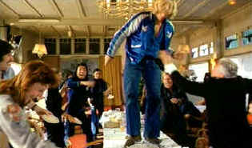
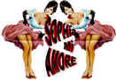

| Turkish
Delight/B,B+ |
| Anchor Bay/1973/108/ANA 1.66 |
The free-spirited sexuality that drives the films of Paul Verhoeven is at the
heart of Turkish Delight. Buoyed by the outrageous behavior of its main characters, this
unconventional romance never fails to provoke.
Set in contemporary Amsterdam in the 1970's, Turkish Delight opens
with shuddering violence. Is this going to be a serial killer movie? It turns out to be the revenge
fantasy of artist Eric Vonk. Falling into a depression after the sudden departure of his young
bride Olga, Vonk is festering in an apartment grown over with the refuge of anger and disillusionment.
The violent thoughts serve as a wake-up call for Vonk and he tries resurrecting his healthy sex
drive with a series of casual sexual encounters. Vonk is a contrary character, distasteful on the
one hand and totally free on the other. When he comes to a road block in his escapades, the film
flips back the clock two years in the time leading up to Vonk's meeting with Olga and their
relationship.
Sex is the driving force of the film, racing Eric and Olga racy escapades in
various positions. Verhoeven keeps his sense of humor in tact. Some of the sex scenes are very
funny, but they can turn a misplaced hair. The unpredictability adds a sense of immediacy.
Nothing is sacred in their relationship. The unveiling of Eric's statue is absolutely riotous,
pathetic, and distasteful. Verhoeven has enormous fun at the expense of Olga's parents. The film is
never boring and moves at an excellent pace.
 |
| Not everyone's idea of dessert.
©Anchor Bay |
Rutger Hauer delivers the energy and free-wheeling sexual appetite of
Eric with clear-eyed confidence. Hauer is equally proficient at displaying ecstasy or angst.
Monique Van de Ven radiates with youthful energy and innocence. Van de Ven, originally auditioned
for one of the camera sexual encounters but proved so filled with the energy necessary to bring
Olga to the screen that Verhoeven dumped his original star in favor of the fresh faced Monique.
Hauer and Van de Ven are terrific together, building off each others performances.
The earliest in Anchor Bay's series of Paul Verhoeven's Dutch work, once
again transfer elements are in outstanding condition. Colors are accurate and well saturated. When
the film is slightly grainy, the DVD transfers it in fine consistent patterns. Detail is delivered
in precise strokes. Overall light output is good and shadow detail is executed in proper
balance. Yellow English subtitles are removable. The titles translate the feeling of
the film very well. The mono soundtrack is clean with no hiss.
Verhoeven supplies an audio commentary for the release and again illuminates his
work with added insights. Though shot almost thirty years ago, Verhoeven's memories are as clear as
yesterday. There are times that he simply is describing action, but this is a mostly excellent
addition to the film. Verhoeven's up front and honest style is always refreshing.
|
|
|
|


Sophia mi Amore:
That's what I thought the first time I saw one of the screen's sexiest women in Boy on a Dolphin.
Maybe not in those words, but you get the idea. For a look a Sophia's career from one perspective,
click on her image. Includes a selection of posters from her movies.

 Have you visited Home Theater
Talk lately? One of the friendliest places on the Net for Home Theater and DVD discussion, you
can get help for installation problems or simply share your opinions with other Vidiots. Have you visited Home Theater
Talk lately? One of the friendliest places on the Net for Home Theater and DVD discussion, you
can get help for installation problems or simply share your opinions with other Vidiots.
MRQE
Find reams of movie and DVD reviews at the Movie Review Query Engine, a index of reviews appearing on the Internet.

The Cinema Laser
A home grown magazine for laserphiles that has been publishing for a number of years and has
embraced DVD in a big way. Lots of helpful information.

An on-line Home Theater magazine with excellent hardware reviews,
including thorough and responsible research. Check it out.

Looking for information about widescreen movies and hardware. The Widescreen Movie Center
is the place to go.

The National Film Preservation Foundation (NFPF) is the nonprofit organization created by the U.S. Congress to save
America's film heritage.
 Kinoeye Archive Kinoeye Archive
This is a resource of all content-rich
materials on the web relating to Central and East European cinema. The ultimate aim of the Kinoeye
Archive is to provide a near-as-damn-it definitive index of intelligent and thoughtful
English-language analysis of Central and Eastern European cinema on the web.
|